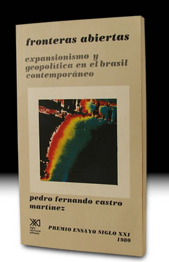

- Inicio
- Publicaciones
- Álvaro Obregón fuego y cenizas de la Revolución Mexicana
- Adolfo de la Huerta El desconocido de Roberto Guzmán Esparza
- A la Sombra de un Caudillovida y muerte del general Francisco R. Serrano
- Soto y Gamagenio y figura
- Adolfo de la Huerta Serie Grandes Protagonistas de la Historia Mexicana
- Historia del Agrarismo en México
- Ciudad Cuauhtémoc, Chihuahuacrónica de su fundación
- Adolfo de la Huerta: la integridad como arma de la revolución
- Adolfo de la Huerta y la Revolución Mexicana
- Fronteras Abiertasgeopolítica y expansionismo en Brasil contemporáneo
- Currículum

ISBN: 968-23-0990-5
Editorial: México: Siglo XXI Editores. 1980. Segunda Edición en España, 1989 205 pp.
Fronteras Abiertas
expansionismo y geopolitica en el Brasil contemporáneo
Uno de los temas más importantes de la política internacional de América Latina durante los sesentas y setentas fue el referido a la relación singular que Brasil tuvo con Estados Unidos, con los países sudamericanos, así como con Portugal. Estas áreas buscaron integrarse en un proyecto que buscaba realizar los sueños hegemónicos de Brasil, en el que el consentimiento de los Estados Unidos aparecía como la condición fundamental.
En este trabajo se hace una revisión ilustrativa y una explicación de los hechos más notables de la política exterior brasileña en los años 1960-1978, en un intento de proporcionar algunos elementos que favorezcan el análisis histórico del proceso expansionista brasileño en su conjunto, proceso que amenazó con tener serias consecuencias en las relaciones interamericanas.
El peligro de las aspiraciones imperiales de Brasil de aquellos años sonaba quimérico si se ignoraban dos circunstancias: el enorme potencial económico del país, incluyendo la posibilidad de llegar en un plazo no lejano a una producción importante de energía nuclear, y la existencia de una costa militar, adaptada al poder e inspirada en ambiciones geopolíticas.
Pedro Fernando Castro Martínez obtuvo con este trabajo el segundo premio del II Concurso Ensayo Siglo XXI, ¿”Qué hacer en América Latina”, 1980
Este trabajo se deriva de la tesis del autor para obtener su título de Licenciatura en Relaciones Internacionales.
Réplicas y consultas con el autor: pedrocastro3131@gmail.com
Índice
Introducción
- Antecedentes: relaciones preferenciales con los Estados Unidos; la política del liderazgo sudamericano.
- El contexto regional: las relaciones entre Estados Unidos y América Latina en las dos últimas décadas.
- La política exterior independiente: la reformulación de la política exterior; las dificultades del gobierno populista; relaciones Brasil-Estados Unidos; relaciones Brasil-países latinoamericanos; relaciones Brasil-países africanos-Portugal.
- Brasil: potencia subimperialista: imposición y consolidación del subimperialismo; la doctrina geopolítica; la construcción del complejo industrial-militar; relaciones Brasil-Estados Unidos; relaciones Brasil-países sudamericanos; relaciones Brasil-países africanos y Portugal.
Joao Goulart, Golbery do Cuoto e Silva, Política Exterior de Brasil, Janio Cuadros, Garrastazu Medici